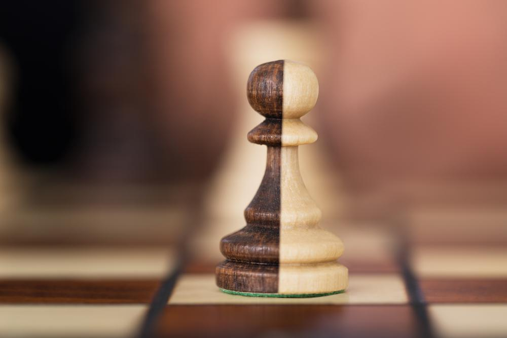
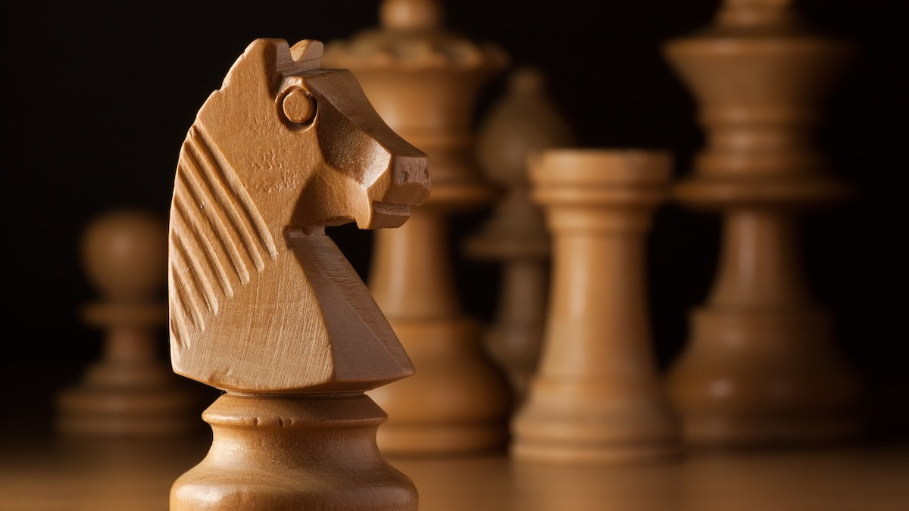
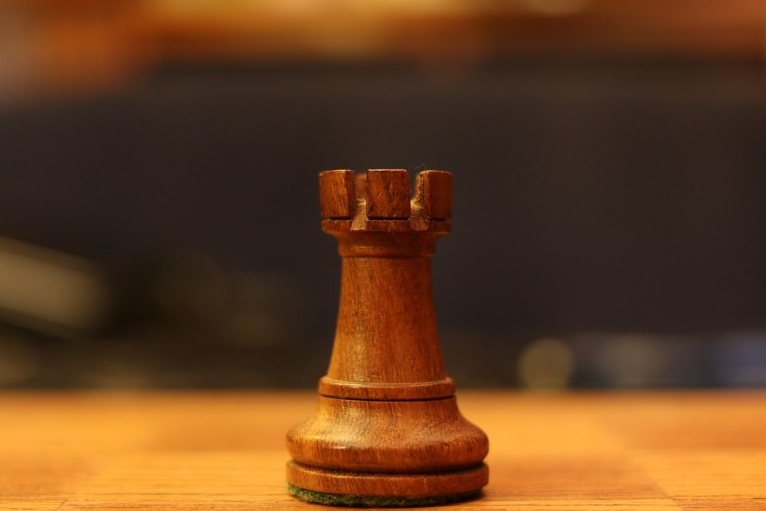
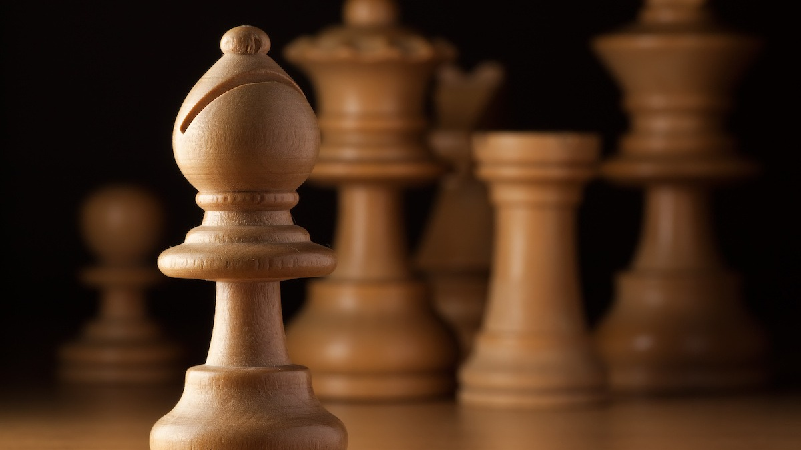
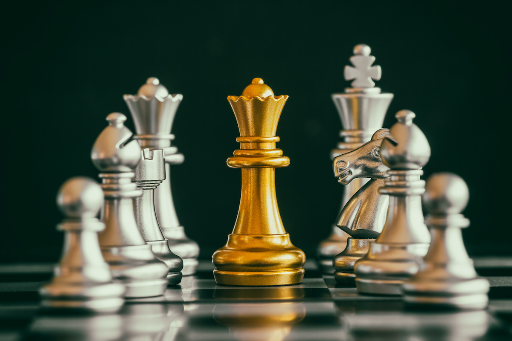

Home
About
Quiz
How to play Chess
There are 6 key pieces in chess that form the infamous game.
The first piece is the king, the king is the center and most important piece of the game, if he goes down, you lose
The kings movement is simple, he can move in any direction , however he can only move one tile at a time

The next piece is the pawn, the pawn is the most populated piece in the game, as each player has 8 pawns in front of their other pieces
The pawn can only move one tile ahead, however their are two exepctions
When the pawn first moves, it has the option to move up two tiles rather than 1
The second exception is when another piece is right next to the pawn, but diagonally, then the pawn can move diagonally to kill that piece
Lastly, if your pawn reaches the end of board, you can replace with any other piece you want.

Next up is the knight, the knight is the horse looking piece on the board, each player has two knights, and they are placed in between the rook and the bishop.
The knight is the only piece in the game that doesn't move in a straight line, instead it moves in an L position, two tiles one way, one going the other
The knight can also hop over pieces in its way of making the L, however it can only kill pieces that are one L away from it

The next piece is the rook, each rook is placed rook is placed at the end of their board next the knight, and each player has two
The rook can only move in a straight line and is one of the more simple pieces in chess
The rook can go as far is it can in a straight line unless it is blocked, if an enemy pieces is what's blocking it, the rook can kill it

The next piece is the bishop, which is placed next to the knight and next to either the king or the queen, each player has two
Similar to the rook, the bishop only moves in straight lines, however instead of going vertically or horizonally, it goes diagonally
Each bishop also only moves to the same color tile everytime, one only being able to go to white tiles while the other only black

The last piece in the game is the queen, which is considered the most powerful piece in the game, each player has one and she is placed in between the king and a bishop
Like the rook, the queen can move anywhere horizonally or vertically, and like the bishop, she can also move diagonally, essentially she can move in any
directionIf your queen does die, you will have a chance to ressurect it, however only if your pawn reaches the opposite end of the board